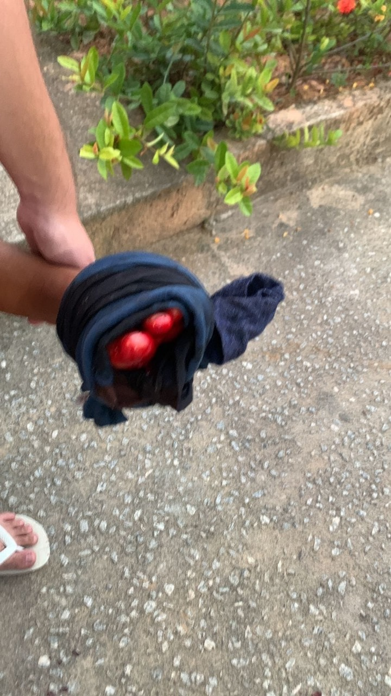
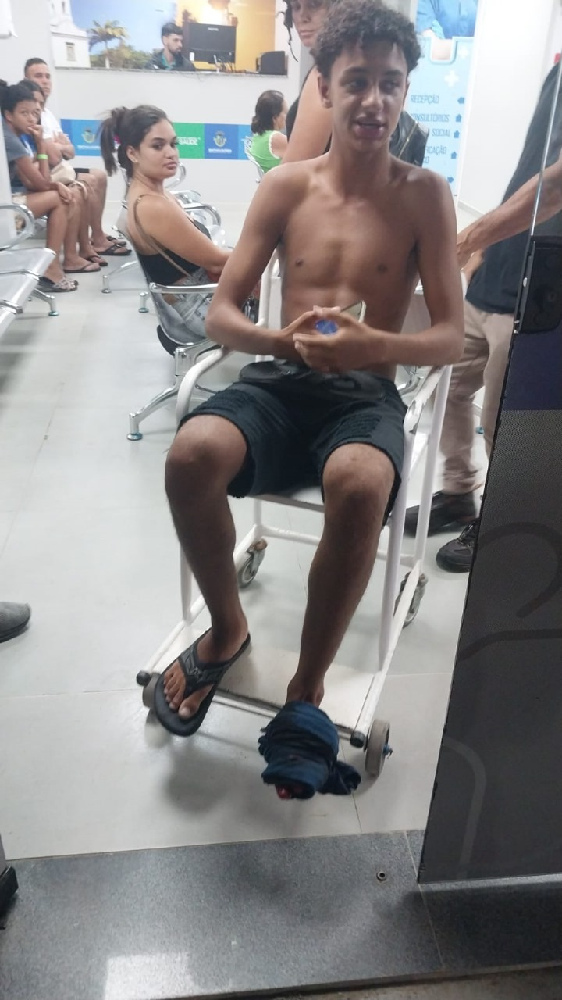

No dia 22 de dezembro de 2024, por volta das 16h42, Driei Otávio Campos de Souza, jogador da Seleção Brasileira de Beach Soccer, sofreu um acidente impressionante enquanto participava de um encontro entre amigos, conhecido como "Noite dos Crias". O evento, que reunia amigos em clima descontraído, teve seu momento de tensão quando Driei, ao tentar pular um muro após perder uma bola de futebol, cortou o pé gravemente em um arame farpado.
A gravidade do ferimento chamou atenção, sendo descrita pelos presentes como uma verdadeira "torneira de sangue" no local do corte. Com o pé machucado, Driei entrou em estado de paranoia devido à dor intensa e à perda significativa de sangue, que resultou em um quadro de anemia elevado.
Demonstrando união e rapidez, os amigos e moradores próximos prestaram os primeiros socorros, utilizando panos e improvisando torniquetes para conter o sangramento até a chegada de uma mãe do grupo para levar o atleta ao hospital mais próximo. O apoio coletivo foi crucial para estabilizar o estado do atleta no momento crítico.
Driei foi levado ao hospital, onde permanece em observação. Apesar da gravidade do acidente, familiares e amigos estão confiantes em sua recuperação. A Seleção Brasileira de Beach Soccer ainda não divulgou uma nota oficial sobre o ocorrido ou sobre como isso poderá impactar a carreira do jogador.
O episódio serve de alerta sobre os riscos de brincadeiras ou ações impensadas durante momentos de descontração. Os amigos e a comunidade destacaram a importância do rápido atendimento e da união em situações emergenciais.
Este acidente reforça como atitudes rápidas podem salvar vidas e como a união de uma comunidade faz a diferença em situações adversas. Desejamos uma rápida recuperação a Driei Otávio Campos de Souza e que ele retorne logo aos gramados representando o Brasil!